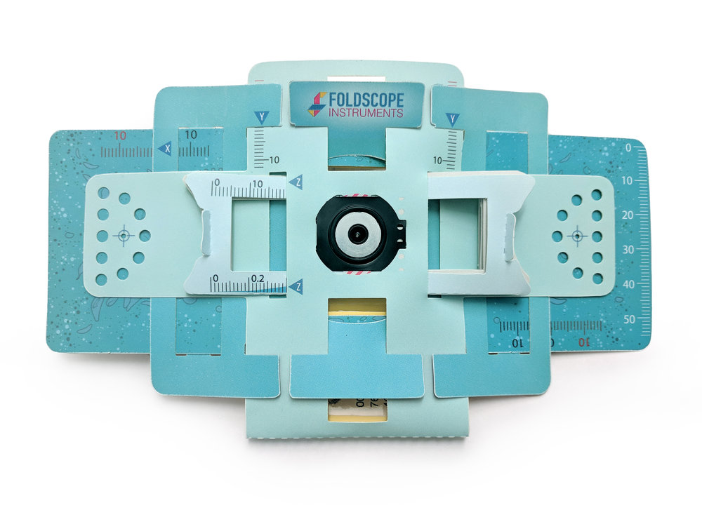

Foldscope

Foldscope is a paper-based microscope with a magnification of 140X and a resolution of 2 microns. You can buy 20 of them for $35 or get a fancy one for $40.
Maya Anjur-Dietrich gave me an old model to play with. Included was a low mag lens, and a high mag lens with condenser. There was an LED light source, and a magnetic mounter for your cell phone to take pictures. There's also a way to mount the Foldscope to your phone so that you can use the light from your phone as a projector which I didn't try.

The lenses have a strong aberrations, and the Foldscope is not the easiest thing to build or to use. However I was working with an older model, and you can read a detailed review of the newer model here. I think that the actual tiny lenses themselves are the most valuable component. Combined with a few old phones or webcams, 20 of these lenses provide a powerful way to take time-lapses on a bunch of different samples all at once.